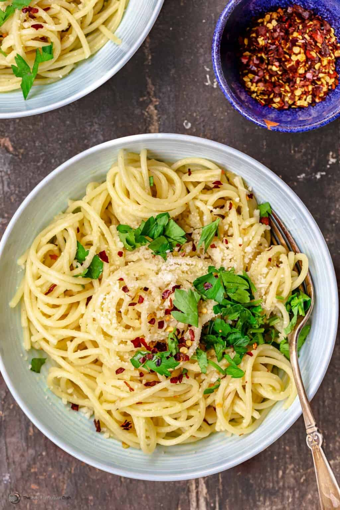

Spaghetti Aglio e Olio

Aglio e Olio, pronounced ah-li-oh eh oh-li-oh, translates to "garlic and olive oil."
Spaghetti aglio e olio is a traditional Italian dish that originated somewhere in the South of Italy likely in the area of Naples. It is basically spaghetti with garlic and olive oil, and it's considered somewhat of a lower-budget version of pasta with mussels!
Ingredients
- Thin spaghetti
- Extra Virgin Olive Oil
- Garlic
- Kosher Salt
- Red Pepper flakes
- Grated Parmesean
Steps
- Prepare the pasta. Boil a large pot of water, and be sure to salt it well before adding the pasta. I use about 2 tablespoons of kosher salt. Cook the pasta according to package instructions, until al dante or a little before (you'll make the sauce before the pasta is done cooking using some of the starchy pasta water). You will need to reserve a good 1 ½ cup of the pasta water.
- Prepare the sauce. Don't wait until the pasta is fully cooked to make the sauce. At 4 to 5 minutes after you add the pasta to the boiling water, you can begin making the sauce. Warm your extra virgin olive oil over medium heat and add the garlic. Cook until the garlic is just turning golden (DO NOT brown the garlic), stirring regularly and managing the heat to prevent it from over-cooking. Add the red pepper flakes and toss for an additional 30 seconds. If the pasta is not ready, remove the oil from the heat and wait for the pasta.
- Add pasta water. Ladle the reserved pasta cooking water to the pan. Allow it to simmer until the liquid reduces by about ⅓.
- Add the pasta to the aglio e olio sauce. Once the sauce mixture has reduced, add in the cooked pasta. Toss for a few minutes, then turn off the heat and add parmesan and parsley. Toss to combine. I recommend allowing the pasta to sit for a couple of minutes, to absorb the sauce.